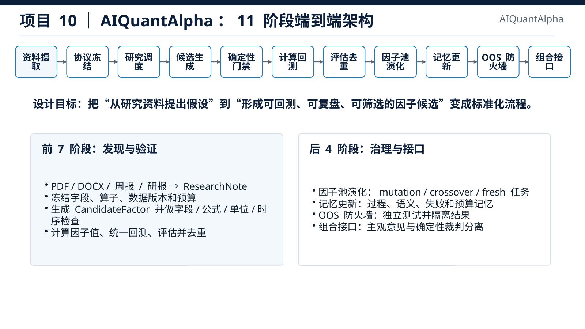

AI for QuantMulti-AgentFactor ResearchAuditability
AIQuantAlpha｜多 Agent 因子研究智能体
将研报解析、研究假设、公式生成、质量门禁、回测评估、因子池演化与 OOS 评估整合为统一研究链路，通过字段/算子白名单和哈希血缘约束候选因子生成与筛选。
30+研报结构化接入
225+字段
120+算子
11 阶段端到端架构：资料摄取、协议冻结、候选生成、质量门禁、回测、池化、OOS 与组合接口。
查看项目细节
- 核心对象包括 RunProtocol、ResearchNote、CandidateFactor、QualityTrace、BacktestRun、PoolState 与 OOSReport。
- 支持日频 A 股、分钟尾盘因子与 5 分钟 CTA 研究共用候选契约与适配器。
- 设计重点在可复现、可审计、可扩展和受控探索。